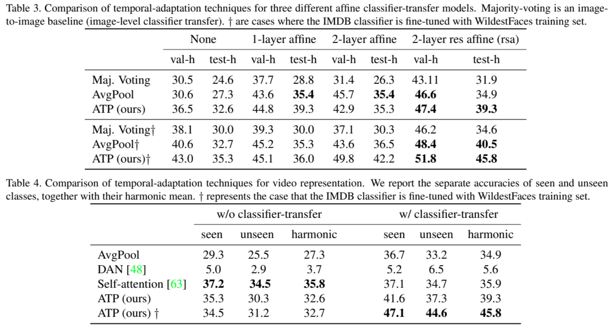

Red Carpet to Fight Club: Partially-supervised Domain Transfer for Face Recognition in Violent Videos
Yunus Can Bilge* Mehmet Kerim Yucel* Ramazan Gokberk Cinbis Nazli Ikizler-Cinbis Pinar Duygulu
Hacettepe University Middle East Technical University
In WACV 2021
Paper | Dataset | PyTorch code

Abstract
In many real-world problems, there is typically a large discrepancy between the characteristics of data used in training versus deployment. A prime example is the analysis of aggression videos: in a criminal incidence, typically suspects need to be identified based on their clean portrait-like photos, instead of their prior video recordings. This results in three major challenges; large domain discrepancy between violence videos and ID-photos, the lack of video examples for most individuals and limited training data availability. To mimic such scenarios, we formulate a realistic domain-transfer problem, where the goal is to transfer the recognition model trained on clean posed images to the target domain of violent videos, where training videos are available only for a subset of subjects. To this end, we introduce the "WildestFaces" dataset, tailored to study cross-domain recognition under a variety of adverse conditions. We divide the task of transferring a recognition model from the domain of clean images to the violent videos into two sub-problems and tackle them using (i) stacked affine-transforms for classifier-transfer, (ii) attention-driven pooling for temporal-adaptation. We additionally formulate a self-attention based model for domain-transfer. We establish a rigorous evaluation protocol for this "clean-to-violent" recognition task, and present a detailed analysis of the proposed dataset and the methods. Our experiments highlight the unique challenges introduced by the WildestFaces dataset and the advantages of the proposed approach.
Paper
Methodology
Experimental Results

Citation
@inproceedings{wildestFaces21,
author = {Bilge, Yunus Can and Yucel, Mehmet Kerim and Cinbis, Ramazan Gokberk and Ikizler-Cinbis, Nazli and Duygulu, Pinar},
title = {Red Carpet to Fight Club: Partially-supervised Domain Transfer for Face Recognition in Violent Videos},
booktitle = {Winter Conference on Applications of Computer Vision ({WACV})},
year = {2021}
}
(* indicates equal contributions)